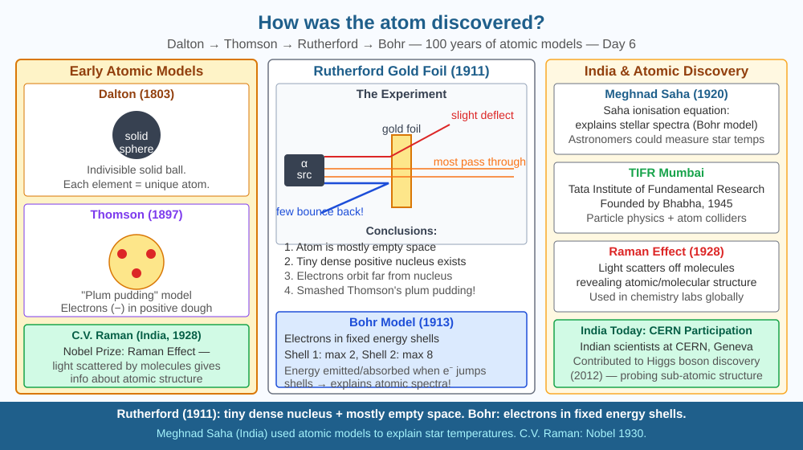

By the end of this lesson, you should be able to describe the key experiments that revealed atomic structure, explain Rutherford's gold foil experiment, and predict what no deflection would have meant.
You cannot see an atom. So how did scientists figure out what's inside one? Every major discovery of atomic structure came from clever experiments — firing particles at things and watching what bounced back.
Dalton's model (1803): Atoms are solid, indivisible spheres. Different elements have different mass atoms. No internal structure.
Thomson's cathode ray experiment (1897): Fired electrons through a magnetic field — they curved, proving they were charged particles. Proposed the "plum pudding" model: electrons embedded in a diffuse positive charge cloud.
Rutherford's gold foil experiment (1909–1911): - Fired alpha particles (helium nuclei, +2 charge) at a very thin gold foil - Most passed straight through (atom mostly empty space) - Some deflected at large angles (hit something dense and positive) - A few bounced straight back (rare direct hits on the tiny nucleus) - Conclusion: atom has a tiny, dense, positively charged nucleus
Bohr's model (1913): Electrons orbit the nucleus in discrete energy levels. Electrons jumping between levels emit/absorb light at specific wavelengths → explains atomic emission spectra.
Modern model: Electrons in orbitals described by probability (quantum mechanics).
Think of atomic discovery as detective work using invisible bullets:
Imagine you want to figure out what is hidden inside a dark room — you cannot open the door or turn on the light. Instead, you roll differently sized balls through a slot in the door and listen to how they bounce back. If every ball rolls straight through, the room is empty. If some balls bounce back at sharp angles, something hard and small must be sitting inside. If most balls pass through but a tiny fraction deflect wildly, whatever is inside is very small but extremely hard.
This is exactly what Rutherford did. The "room" was a gold atom. The "balls" were alpha particles. The result: almost every alpha particle passed straight through (room mostly empty), but a few bounced at angles that made no sense if charge were spread out — they had hit something tiny and intensely concentrated. Rutherford reportedly said it was "as if you fired artillery shells at tissue paper and they came back and hit you." The nucleus was the hidden object in the room.
Each model — Dalton's solid sphere, Thomson's plum pudding, Rutherford's nuclear model, Bohr's planetary model — was the best explanation available until a new experiment revealed something the old model could not explain.
The SVG shows the gold foil experiment as a three-panel diagram moving left to right.
Panel 1 shows a radioactive source emitting a narrow beam of alpha particles (depicted as small red arrows) directed at a thin gold foil strip at the centre. A circular fluorescent screen surrounds the foil, glowing wherever an alpha particle strikes. Panel 2 zooms into the foil cross-section: the vast majority of alpha particle paths pass straight through undisturbed (grey arrows), a smaller group bends at moderate angles (orange arrows), and a tiny fraction curves back toward the source (red curved arrows). Each path is labelled with the predicted cause — "empty space," "near nucleus," and "direct hit on nucleus." Panel 3 shows the resulting model: a gold atom with a tiny positive nucleus at the centre (labelled "~10⁻¹⁵ m") surrounded by the much larger electron cloud boundary (labelled "~10⁻¹⁰ m"), with a scale bar indicating the 100,000× size difference.

Indian physicist C.V. Raman (Nobel Prize 1930, first Asian Nobel laureate in science) used photon scattering to discover the Raman effect — inelastic scattering of light. Like Rutherford's work, Raman's experiment revealed structure by studying what particles (photons) did after scattering off molecules. Raman spectroscopy is now used in cancer detection, gem authentication, pharmaceutical analysis, and studying Indian historical artifacts. India celebrates National Science Day on February 28 — the anniversary of Raman's discovery.
The logic of Rutherford's experiment — probe hidden structure with particles and interpret what deflects — underlies modern particle physics at CERN, where protons are smashed together to reveal subatomic structure. India is a scientific associate member of CERN, and Indian engineers contributed to detector construction. The method of firing particles and reading their scattering remains the primary way physicists discover new particles today.
Simulate Rutherford's experiment: Roll marbles at a curved, hidden object under a cloth. From how many marbles bounce back and at what angles, deduce the shape and position of the object — without lifting the cloth. This is exactly what Rutherford did: he deduced the nucleus's existence from alpha particle scattering patterns.
Record your data in a table: number of marbles rolled, number that pass straight through, number that deflect slightly, number that bounce back. Calculate the fraction that bounce back. Compare with Rutherford's original result (roughly 1 in 8,000 alpha particles bounced back). What does your fraction tell you about the relative size of your hidden object compared to Rutherford's nucleus?
Rutherford estimated the nuclear radius by calculating the closest approach distance where an alpha particle would be stopped by electrostatic repulsion. The nucleus is roughly 100,000 times smaller than the atom. If an atom were scaled up to the size of the Oval Maidan in Mumbai (550 m diameter), the nucleus would be the size of a small pea (5.5 mm). The rest is empty space, with electrons somewhere in the vast surrounding volume. The "solid" matter you touch is almost entirely empty space — what feels solid is electromagnetic force.
Predict: Thomson's plum pudding model had positive charge spread uniformly through the atom like a cloud, with electrons embedded in it. Using only the logic of Rutherford's experiment (large-angle deflections require a concentrated positive charge), explain why the plum pudding model was ruled out. What specific result would the plum pudding model have predicted for alpha particle scattering, and why was that prediction wrong?
Which experiment provided the first evidence that the atom has a small, dense, positively charged nucleus?
Correct answer: C
Why is knowing the mechanism of the gold foil experiment more valuable than memorising its result?
Correct answer: A
If all alpha particles had passed straight through the gold foil without deflection, what would that predict?
Correct answer: C
Rutherford fired alpha particles at gold (Z=79) rather than a lighter metal like aluminium (Z=13). Using electrostatics (like charges repel), explain why gold was a better choice than aluminium for this experiment. Consider the charge of the gold nucleus vs the aluminium nucleus, and how a stronger repulsive force would affect the scattering angles for the same alpha particle speed. Then predict: if Rutherford had used lead (Z=82) instead of gold, would deflection angles increase, decrease, or stay the same? Justify your answer.
Every model of the atom in this lesson — Dalton's, Thomson's, Rutherford's, Bohr's — was eventually replaced. Scientists did not consider this a failure. Each model was accepted as the best current explanation, used to make predictions, and then discarded when experiments contradicted those predictions. This is the scientific method working exactly as designed: models are tools, not truths. Even today, the "quantum mechanical orbital model" that replaced Bohr's planetary model is considered an approximation — a very good one, but not the final word. Science advances by breaking its own best models.
Rutherford deduced the existence of the nucleus without ever seeing it — by counting which alpha particles bounced back from gold foil, proving the atom is mostly empty space with a tiny, dense, positive core.